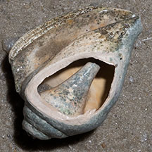

|
|
| shelled snails text index | photo index |
| Phylum Mollusca > Class Gastropoda |
| Conch
snails Family Strombidae updated Sep 2020
Sadly, conch snails are better known to many Singaporeans as seafood. But once you've seen a living Conch, you would hardly bear to eat it. With its large eyes and lively habits (for a snail), it seems cruel to snack on it. Where seen? These snails are encountered on both our Northern and Southern shores. Some, however, are no longer as commonly seen as in the past. Conch snails, even the larger ones, are hard to spot as they are usually half buried and their shells are well camouflaged. Jumping Snails! A conch does not just slowly creep along. Instead, it can move in jerks. While most other snails have a broad operculum to seal the shell opening, members of the Conch family have a narrow operculum. Instead of a broad flat foot, a conch has a narrow foot that is strong and muscular. The conch digs its claw-like operculum into the sand and pushes against it to 'hop' forwards like a pole-vaulter. |
 Hopping along Tanah Merah, Dec 11 |
 Claw-like operculum on a strong narrow foot. Pulau Jong, Aug 06 |
 The shell is a coiled beneath the flared lip. |
| Turbo-charged
snail: Like the spoiler on a sports car, the flared shell
keeps the conch down as it hops around and helps it from being rolled
about in the currents. If it does get overturned, it uses its operculum
to right itself. The inner surface of the flared shell is usually
highly glossy and pearly, and in the Spider conch, in shades of pink
and orange. The upper side of the shell may have different patterns
but in living snails these are usually obscured by sediments and camouflaging
algae and encrusting animals. While most snails have eyes at the base of their tentacles, a conch has large eyes on stalks. While most snail eyes generally only detect light, it is believed that the eyes of the conch snail may actually produce an image! So the Conch is truly a sports version of a snail. There is a U-shaped notch (called the stromboid notch) at the tip of the shell through which one of the two eye stalks usually sticks out. The other eye sticks out beneath the lip of the shell. Amazing feats by Conch feet: One species of the Conch family, Strombus maculatus, can leap more than 1m! Another, Terebellum terebellum, is shaped like a bullet can can move rapidly for up to 3m by flapping its fleshy foot. What do they eat? Many conch snails are scavengers, eating decaying plants and animals. Others eat tiny algae. The flared shell also protects the proboscis as the animal sweeps the bottom for titbits. |
 Laying bright orange egg string. Terumbu Hantu, Apr 12 |
 Laying fine beige egg string. Tanah Merah, Jul 10 |
 A young Spider conch that hasn't developed spines on its shell yet. Pulau Jong, Jul 07 |
| Conch babies: Mama snails lay egg strings. Young conch snails may look different from adults, with thinner lips on the shells or lacking spines. |
 Harvesting Gong-gong, dragging box behind. Changi, Aug 14 |
 Gong-gong in the box dragged behind. Changi, Aug 14 |
| Human uses: Conch snails are edible
and eaten everywhere they are found. In Singapore, Gong-gong were once plentiful, they are still harvested from our shores in small numbers. The Gong-gong is the most popularly eaten conch,
fried with chilli or as fritters. You can sometimes still see them
served at hawker centres. The Black-lipped conch and Spider conch were also eaten. The larger
Spider conch is also collected and killed for its beautifully shaped
and coloured shell. Status and threats: The Black-lipped conch and Spider conch are listed as 'Vulnerable' on the Red List of threatened animals of Singapore, while the Dark Diana conch is listed as 'Critically endangered'. The Spider conch and Black-lipped conch are no longer as common as in the past. They are threatened by habitat degradation, over-collection for food and as souvenirs. Hopefully, our Conch snails don't suffer the same fate as the Queen Conch (Strombus gigas) of the Americas which is now listed on CITES II due to over-harvesting. |
| Some Conch snails on Singapore shores |


| Family
Strombidae recorded for Singapore from Tan Siong Kiat and Henrietta P. M. Woo, 2010 Preliminary Checklist of The Molluscs of Singapore. in red are those listed among the threatened animals of Singapore from Davison, G.W. H. and P. K. L. Ng and Ho Hua Chew, 2008. The Singapore Red Data Book: Threatened plants and animals of Singapore. Nature Society (Singapore). 285 pp. ^from WORMS +Other additions (Singapore Biodiversity Record, etc)
|
Links
References
|